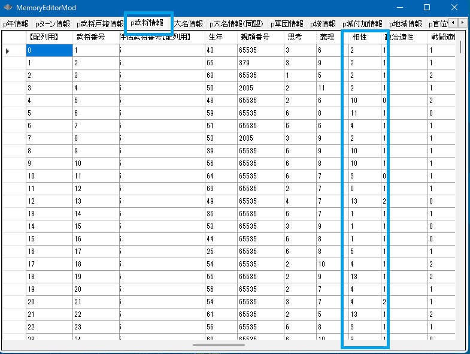

２人の武将(姫を含む)の関係を判定することはよくあることです。
・二人は同じ大名家に所属しているのか？
・二人は血縁なのか？ 兄弟なのか？ 姉妹？
・二人は夫婦なのか？
・二人は反りがあるのか、あわないのか。
そういったことは、もちろん２人の武将の「p武将情報」や「p武将戸籍情報」の中身を比較していけば判定できますが、
やや判定するのが面倒だろうと思われるものが予め用意されています。
各武将には「0～15」の相性値が用意されています。
これは全体として下記イメージのよにリング上に配置されており、遠いほど相性が悪いという関係となります。
値が一致する時、相性は最高で、相性差は０、一番遠いとき（例えば、２と10）は相性が最悪で相性差は８となります。
メモリエディタ上で言えば、p武将情報の相性という列です。

int Get_武将相性差(int 武将Ａ番号【配列用】, int 武将Ｂ番号【配列用】)
対象の２人の武将の相性の違いを得る。最小0(相性最高) 最大8(相性最悪)
返り値：最小が0(=相性最高)～最大が8(=相性最悪)
void カスタム::On_プレイヤ担当ターン《メイン画面》() {
int i謙信BushouID = Get_武将番号【配列用】(顔番号::長尾景虎);
int i信玄BushouID = Get_武将番号【配列用】(顔番号::武田晴信);
if (0 <= i謙信BushouID && i謙信BushouID < 最大数::武将情報::配列数) {
if (0 <= i信玄BushouID && i信玄BushouID < 最大数::武将情報::配列数) {
// 謙信と信玄の相性差を得る
int 二人の相性の差 = Get_武将相性差(i謙信BushouID, i信玄BushouID);
デバッグ出力 << "二人の相性の差:" << 二人の相性の差 << endl;
}
}
}
int Get_相性差(int 相性値Ａ, int 相性値Ｂ)
単純に２つの相性の値同士の差を計算する関数も提供している。
int sa = Get_相性差(2, 11); // 相性差は７。（９ではない)
// 相性は円環状。下図で「２」の位置から「最短でいくつ動けば」「11」に到達するのか？ それが相性差）
void カスタム::On_相場変更直前() {
// １年に一度、春に、仕えている大名の相性値へと１つ近づく処理
if (p年情報.季節 == 季節::春) {
for (int iBushouID = 0; iBushouID < 最大数::武将情報::配列数; iBushouID++) {
// 相性が問題となる、現役や軍団長ならば...
if (p武将戸籍情報[iBushouID].状態 == 状態::現役 || p武将戸籍情報[iBushouID].状態 == 状態::軍団長) {
// 自分自身の大名を得る
int iDaimyoID = p武将情報[iBushouID].所属大名【大名番号】 - 1;
if (0 <= iDaimyoID && iDaimyoID < 最大数::大名情報::配列数) {
int 大名のBushouID = p大名情報[iDaimyoID].大名【武将番号】 - 1;
if (0 <= 大名のBushouID && 大名のBushouID < 最大数::武将情報::配列数) {
int 大名の相性値 = p武将情報[大名のBushouID].相性;
int 自分の相性値 = p武将情報[iBushouID].相性;
if (大名の相性値 != 自分の相性値) {
// プラスとマイナス、どちらかに１つ動かして、大名との相性に近づくほうへと移動する
// ０～１５の循環になっているのだから、「16で割った余り」とすることで常に循環に出来る
int 相性値↑ = (自分の相性値 + 1) % 16;
int 相性値↓ = (自分の相性値 - 1) % 16;
// 相性値に+1 してみた場合と、相性値に-1してみた場合の相性差の変化を探る
int 相性値↑の場合の差 = Get_相性差(大名の相性値, 相性値↑);
int 相性値↓の場合の差 = Get_相性差(大名の相性値, 相性値↓);
// +1した場合、と-1した場合で、+1した方が大名と相性が良くなるなら
if (相性値↑の場合の差 < 相性値↓の場合の差) {
p武将情報[iBushouID].相性 = 相性値↑;
}
else {
p武将情報[iBushouID].相性 = 相性値↓;
}
}
}
}
}
}
}
}
例えば、２人が血縁かを判定してみましょう。
void カスタム::On_プレイヤ担当ターン《メイン画面》() {
int i信長BushouID = Get_武将番号【配列用】(顔番号::織田信長);
int i五徳BushouID = Get_武将番号【配列用】(顔番号::織田五徳);
if (0 <= i信長BushouID && i信長BushouID < 最大数::武将情報::配列数) {
if (0 <= i五徳BushouID && i五徳BushouID < 最大数::武将情報::配列数) {
if (Is_自分は相手の血縁(i信長BushouID, i五徳BushouID)) {
デバッグ出力 << "二人は血縁です。" << endl;
}
else {
デバッグ出力 << "二人は血縁ではありません。" << endl;
}
}
}
}
これ以外にも、特別な関係を判定する様々な関数が用意されています。
それらは下記のものであり、関数名がそのまま意味を十分しめしていますので、
解説は不要だと思います。
// 以下は「Ａ武将」と「Ｂ武将」との「特別な人間関係の真偽を簡単に判定」するための関数となる。 bool Is_自分は相手の娘( int 自分武将番号【配列用】, int 相手武将番号【配列用】 ); bool Is_自分は相手の息子(int 自分武将番号【配列用】, int 相手武将番号【配列用】); bool Is_自分は相手の子(int 自分武将番号【配列用】, int 相手武将番号【配列用】); bool Is_自分は相手の親(int 自分武将番号【配列用】, int 相手武将番号【配列用】); bool Is_自分は相手の父(int 自分武将番号【配列用】, int 相手武将番号【配列用】); bool Is_相手は自分の父(int 自分武将番号【配列用】, int 相手武将番号【配列用】); bool Is_自分は相手の母(int 自分武将番号【配列用】, int 相手武将番号【配列用】); bool Is_相手は自分の母(int 自分武将番号【配列用】, int 相手武将番号【配列用】); bool Is_自分は相手の弟(int 自分武将番号【配列用】, int 相手武将番号【配列用】); bool Is_相手は自分の弟(int 自分武将番号【配列用】, int 相手武将番号【配列用】); bool Is_自分は相手の妹(int 自分武将番号【配列用】, int 相手武将番号【配列用】); bool Is_相手は自分の妹(int 自分武将番号【配列用】, int 相手武将番号【配列用】); bool Is_自分は相手の兄(int 自分武将番号【配列用】, int 相手武将番号【配列用】); bool Is_相手は自分の兄(int 自分武将番号【配列用】, int 相手武将番号【配列用】); bool Is_自分は相手の姉(int 自分武将番号【配列用】, int 相手武将番号【配列用】); bool Is_相手は自分の姉(int 自分武将番号【配列用】, int 相手武将番号【配列用】); bool Is_自分と相手は兄弟( int 自分武将番号【配列用】, int 相手武将番号【配列用】 ); bool Is_自分と相手は姉妹( int 自分武将番号【配列用】, int 相手武将番号【配列用】 ); bool Is_自分と相手は姉弟( int 自分武将番号【配列用】, int 相手武将番号【配列用】 ); bool Is_自分と相手は兄妹( int 自分武将番号【配列用】, int 相手武将番号【配列用】 ); bool Is_自分は相手の夫(int 自分武将番号【配列用】, int 相手武将番号【配列用】); bool Is_自分は相手の妻(int 自分武将番号【配列用】, int 相手武将番号【配列用】); bool Is_自分は相手の血縁(int 自分武将番号【配列用】, int 相手武将番号【配列用】); bool Is_相手は自分の家臣( int 自分武将番号【配列用】, int 相手武将番号【配列用】 ); bool Is_相手は自分の大名(int 自分武将番号【配列用】, int 相手武将番号【配列用】); bool Is_自分と相手は同じ大名家所属( int 自分武将番号【配列用】, int 相手武将番号【配列用】 );
「武将 － ２人の武将の関係」に関する主な所は以上となります。
詳しくは「武将情報型.h」などを参照してください。